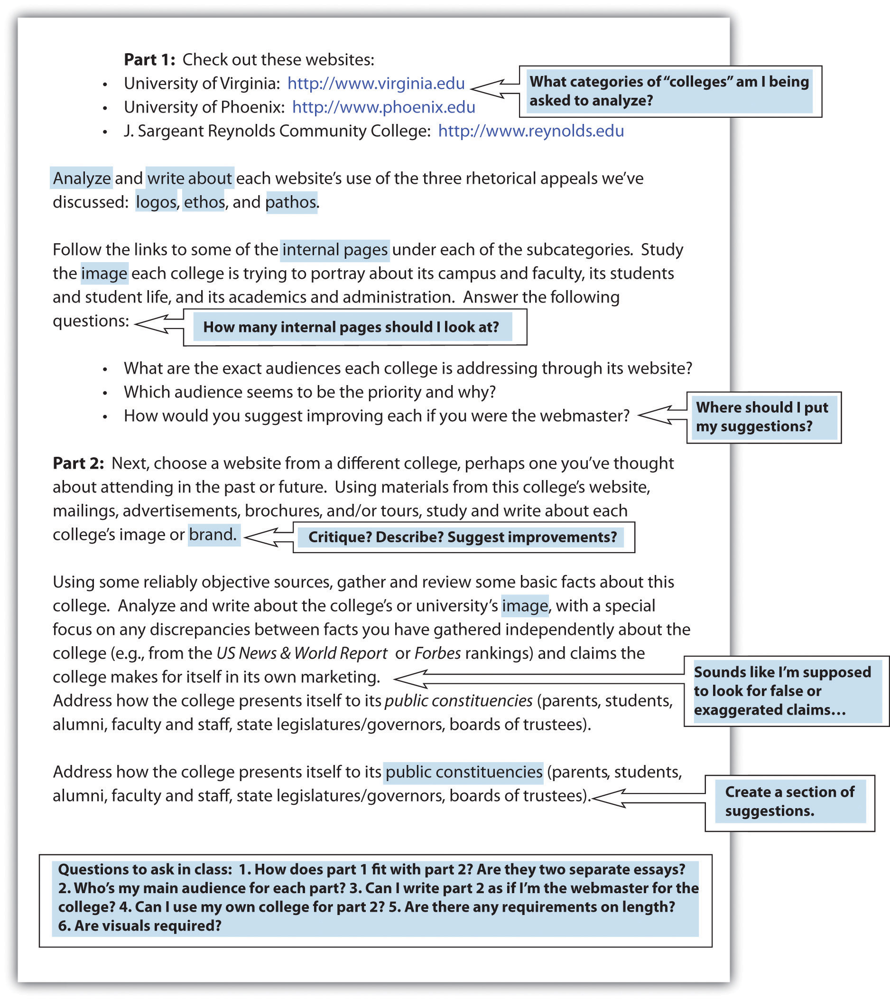

As a college student, you have been writing for years, so you probably think that you have a clear understanding about academic writing. High school and college writing, however, differ in many ways. This chapter will present some of those core differences along with a general overview of the college writing process.
If you’re like most first-year college students, you’re probably anxious about your first few writing assignments. Transitioning from being a successful high school writer to being a quality college writer can be difficult. You have to adjust to different learning cultures. You have to accept that college writing is different from high school writing and come to understand how it is different.
These students relay a typical range of first-year college experiences:
Emma: I always got As on my high school papers, so I thought I was a good writer until I came to college and had to completely rewrite my first paper to get a C–.
Javier: I received an F on my first college paper because I “did not include one original thought in the whole paper.” I thought I was reporting on information I had researched. I didn’t know that I was supposed to add my own thoughts. Luckily, the professor had a policy to throw out each student’s lowest grade of the semester.
Danyell: The professor in my Comp 101 class said that he didn’t want us turning in anything meaningless or trite. He said that we were to show him that we had critical thought running through our heads and knew how to apply it to the readings we found in our research. I had no idea what he was talking about.
Pat: I dreaded my first college English class since I had never done well in English classes in high school. Writing without grammatical and mechanical errors is a challenge for me, and my high school teachers always gave me low grades on my papers due to all my mistakes. So I was surprised when I got a B+ on my first college paper, and the professor had written, “Great paper! You make a solid argument. Clean up your grammar and mechanics next time and you will get an A!” Suddenly it seemed that there was something more important than grammar and punctuation!
Despite the seeming discrepancy between what high school and college teachers think constitutes good college writing, there is an overall consensus about what is “higher” about higher education.
Thinking with flexibility, depth, awareness, and understanding, as well as focusing on how you think, are some of the core building blocks that make higher education “higher.” These thinking methods coupled with perseverance, independence, originality, and a personal sense of mission are core values of higher education.
The difference between high school and college culture is like the difference between childhood and adulthood. Childhood is a step-by-step learning process. Adulthood is an independent time when you use the information you learned in childhood. In high school culture, you were encouraged to gather knowledge from teachers, counselors, parents, and textbooks. As college students, you will rely on personal assistance from authorities less and less as you learn to analyze texts and information independently. You will be encouraged to collaborate with others, but more to discuss ideas and concepts critically than to secure guidance.
It’s important to understand that no universal description of either high school or college writing exists. High school teachers might concentrate on skills they want their students to have before heading to college: knowing how to analyze (often literary) texts, to develop the details of an idea, and to organize a piece of writing, all with solid mechanics. A college teacher might be more concerned with developing students’ ability to think, discuss, and write on a more abstract, interdisciplinary level. But there are exceptions, and debates rage on about where high school writing ends and college writing begins.
Study the following two sets of writing standards. The first is the result of a recent nationwide project to create core standards for language arts students in eleventh and twelfth grades. It outlines what students should be able to do by the time they graduate high school. The second describes what college writing administrators have agreed students should be able to do by the time they finish their first year of college writing courses. What differences do you see? What might account for those differences? How well do you think your skills match up with each set of standards?
As a college student, you must take complete responsibility for your writing assignments. Your professors are assessing your ability to think for yourself, so they’re less likely to give you ready-made templates on how to write a given essay. This lack of clarity will be unsettling, but it’s part of an important growth process. By using strategies, you can systematically approach each assignment and gather the information you need for your writing requirements.
Once you know you have an upcoming writing project, you have some basic decisions to make. The following list of questions will lead you to make some preliminary choices for your writing project. (To learn more, see Chapter 5 "Planning", Section 5.3 "Developing Your Purposes for Writing".)
Planning the basics for your essay ahead of time will help assure proper organization for both the process and the product. It is almost a certainty that an unorganized process will lead to an unorganized product.
A close and careful reading of any given writing assignment will help you sort out the ideas you want to develop in your writing assignment and make sense of how any assigned readings fit with the required writing.
Use the following strategies to make the most of every writing assignment you receive:
Use the following strategies to help you make the most of readings that support the writing assignment:
Above all, when questions or concerns arise as you apply these strategies, take them up with your professor directly, either in class or during office hours. Making contact with your professor by asking substantive questions about your reading and writing helps you stand out from the crowd and demonstrates that you are an engaged student.
College writing often requires the use of others’ opinions and ideas to support, compare, and ground your opinions. You read to understand others’ opinions; you write to express your opinions in the context of what you’ve read. Remember that your writing must be just that—yours. Take care to use others’ opinions and ideas only as support. Make sure your ideas create the core of your writing assignments. (For more on documentation, see Chapter 22 "Appendix B: A Guide to Research and Documentation", Section 22.5 "Developing a List of Sources".)
Discussion and debate are mainstays of a college education. Sharing and debating ideas with instructors and other students allows all involved to learn from each other and grow. You often enter into a discussion with your opinions and exit with a widened viewpoint. Although you can read an assignment and generate your understandings and opinions without speaking to another person, you would be limiting yourself by those actions. Instead it is in your best interest to share your opinions and listen to or read others’ opinions on a steady, ongoing basis.
In order to share your ideas and opinions in a scholarly way, you must properly prepare your knowledge bank. Reading widely and using the strategies laid out in the Section 11.2.3 "Connecting Your Reading with Your Writing" are excellent methods for developing that habit.
Make sure to maintain fluidity in your thoughts and opinions. Be prepared to make adjustments as you learn new ideas through discussions with others or through additional readings. You can discuss and debate in person or online, in real time or asynchronously. One advantage to written online discussions and debates is that you have an archived copy for later reference, so you don’t have to rely on memory. For this reason, some instructors choose to develop class sites for student collaboration, discussion, and debate.
For every assignment you receive with an open topic, get into the habit of writing a journal or blog entry that answers the following four questions:
Figure 11.1 Sample Assignment with Student Annotations
How do you feel about group projects in your college classes? Are you like many students who resist group projects because you prefer to work alone? Do you know why college-level work often requires collaboration and how that collaborative work might be conducted differently than how it’s done in a K–12 environment?
You might not think of a typical writing assignment as a group project, but you begin collaborating on a writing assignment the moment you discuss your topic with someone else. From there, you might ask classmates to read your paper and share their opinions or to proofread your work. Some students form study groups to assure they have reviewers for their work and to have a collaborative atmosphere in which to work. These are just a few examples of effective college students voluntarily engaging in collaboration.
Choosing to collaborate is not always left up to you, since some instructors often require it, whether through simple group discussion boardsA feature of course management systems that allows students to post entries in response to discussion questions. or through more complex interactions, such as a semester-long project. Whether or not it starts out as something that’s required, or “part of your grade” for the course, collaboration is something successful college students eventually learn to do on their own.
If your instructor gives you a collaborative writing assignment, don’t assume the worst possible outcome, where one or two people end up doing all the work. Decide and document who will do what and when it will happen. As a group, you are taking on nearly total responsibility for the project when you are involved in a collaborative learningAn educational method that requires groups of students to take nearly complete responsibility for organizing and scheduling their work together. situation. Because of their complexity, collaborative writing projects still tend to be fairly uncommon, but they are becoming increasingly popular ways of developing and testing your collective ability to think, work, and communicate interdependently as part of a team—certainly an essential skill in the workplace.
If collaboration is required, making a plan at the beginning of the assignment is essential. Decide if you will meet in person, online, or both. If the level of collaboration is at the reviewing and proofreading level, agree on a date to turn in or post drafts for review and set a clear timeline for completing reviews. For more involved collaborative efforts, such as a joint paper or project, begin by agreeing on a vision for the overall project. Then set up a schedule and split up the work evenly and equally, but with a sense of strategy as well. Figure out each other’s strengths and play to them. Make sure the schedule allows for plenty of time to regroup in case a group member does not meet a deadline.
During group meetings, discuss the direction and scope of the overall project as well as individual components. If any group members are struggling with their parts of the project, keep in mind that the success of all depends on the success of each, so meet to address problems. When group members disagree—and there will almost always be some differences of opinion—talk through the problems with a willingness to compromise while being careful to protect the overall integrity of the assignment. Choose an individual deadline for completion that allows time for all group members to read through the draft and suggest further revisions. If your project includes a presentation, make sure to leave time to plan that as well. Decide if one or more people will present and schedule at least one practice session to assure the group members are happy with the final presentation.
Human nature seems to naturally repel suggestions of change from others. It is wise to remember, however, that no one is a perfect writer. So it is in your best interest to welcome and at least consider others’ ideas without being defensive. Guard against taking feedback personally by keeping in mind that the feedback is about the words in your paper, not about you. Also show appreciation for the time your classmate took to review your paper. If you do not completely understand a suggestion from a classmate, keep in mind the “two heads are better than one” concept and take the time to follow up and clarify. In keeping with the reality that it is your paper, in the end, make only the changes with which you agree.
When you review the work of others, keep the spirit of the following “twenty questions” in mind. Note that this is not a simple checklist; the questions are phrased to prevent “yes” or “no” answers. By working through these questions, you will develop a very good understanding about ways to make the writer’s draft better. You’ll probably also come up with some insights about your draft in the process. In fact, you’re welcome to subject your draft to the same review process.
When you have an idea that you think will help the writer, either explain your idea in a comment box or actually change the text to show what you mean. Of course, only change the text if you are using a format that will allow the author to have copies of both his or her original text and your changed version. If you are working with a hard copy, make your notes in the margins. Make sure to explain your ideas clearly and specifically, so they will be most helpful. Do not, for example, note only that a sentence is in the wrong place. Indicate where you think the sentence should be. If a question comes into your mind while you are reading the paper, include the question in the margin.
Instructors assess group projects differently than individual projects. Logically, instructors attribute an individual assignment’s merits, or lack thereof, completely to the individual. It is not as easy to assess students fairly on what they contributed individually to the merits of a group project, though wikis and course management systemsA web-based learning environment that organizes the work of a course (e.g., Blackboard). are making individual work much easier to trace. Instructors may choose to hold the members of a team accountable for an acceptable overall project. Beyond that, instructors may rely on team members’ input about their group for additional assessment information.
For an in-depth collaborative project, your instructor is likely to ask all students in the group to evaluate their own performance, both as individuals and as part of the larger group. You might be asked to evaluate each individual group member’s contributions as well as the overall group efforts. This evaluation is an opportunity to point out the strong and weak points of your group, not a time to discuss petty disagreements or complain about group plans that did not go your way. Think about how you would feel if group members complained about your choices they did not like, and you can easily see the importance of being flexible, honest, and professional with group evaluations. For a clear understanding of how an instructor will grade a specific collaborative assignment, talk to the instructor.